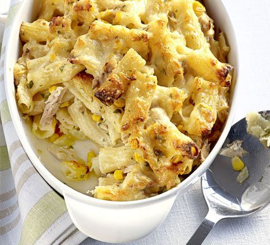

Tuna Pasta Bake

Description
Tuna pasta bake is a dish of pasta baked with sauce and tuna and topped with
melted cheese.
Ingredients
- 600g rigatoni
- 50g butter
- 50g plain flour
- 600ml milk
- 250 strong cheddar, grated
- 2x160g cans tuna in spring water, drained
- 330g can sweetcorn, drained
- large handful chopped parsley
Steps
- Heat oven to 180C/fan 160C/gas 4.
- Boil 600g rigatoni for 2 mins less time than stated on the pack.
- To make the sauce, melt 50g butter in a saucepan and stir in 50g plain flour.
- Cook for 1 min, then gradually stir in 600ml milk to make a thick white sauce.
- Remove from the heat and stir in all but a handful of the 250g grated cheddar.
- Drain the pasta, mix with the white sauce, two 160g drained cans tuna, one 330g
drained can sweetcorn and a large handful of chopped parsley, then season.
- Transfer to a baking dish and top with the rest of the grated cheddar.
- Bake for 15-20 mins until the cheese on top is golden and starting to brown.